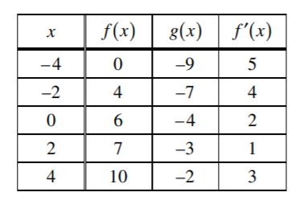

Big Idea: Find the Derivative of an inverse function WITHOUT finding the actual inverse.
(f−1)′(x) =
Steps:
Find an (x,y) coordinate pair for f(x).
If you have been given an equation, plug in the "y" coordiate you've been given and solve for x.
If you have been given a table, use the "y" coordinate you've been give to find the appropriate row
The inverse of that point (y,x) is a solution for f−1
Derive the function you've been given to find f′(x)
Use the equation above to find the "derivative of the inverse".
Example 1: Let f(x) = x3−5x2−8 and let g be the inverse of f. Find g′(−12).
Notice that since we are asking about g′(−12), f (x) has the point (x, −12) as a solution.
Steps:
−12 = x3−5x2−8
(Don't be intimidated. These will always have an easy solution, usually 1. Just guess and check.)
Now we have (1,-12) as a solution to f (x).
The point (-12,1) is a solution for g(x). (Remember, g(x) is the inverse of f so g(x) = f−1(x))
f′(x) = 3x2−10x
g ′(−12) = (f −1)′( −12) = = = −
Example 2:
If f(x) is a one-to-one continuous function with values given in the following table:
If g is the inverse of f then g(2) is:
Notice that since we are asking about g ′(2) = f −1(2), f (x) has the point (x, 2)
as a solution (which is the first row). Steps:
(1,2) is the row we need
The point (2,1) is the solution for g(x). (Remember, g(x) is the inverse of f so g (x) = f−1(x))
We will use f ′ from the first row.
g ′(2) = (f−1) ′(−2) = = =
Your Turn:
Problem 1:

The table above gives values of the differentiable functions f and g, and f ′, the derivative of f, at selected values of x.
If g(x)=f −1(x), what is the value of g′(7)?
Step 1
()
Which (x,y) is a solution to f (x): (,)
Since we are given g'(7) and g is the inverse of f, we have (2,7) as a solution of f(x).